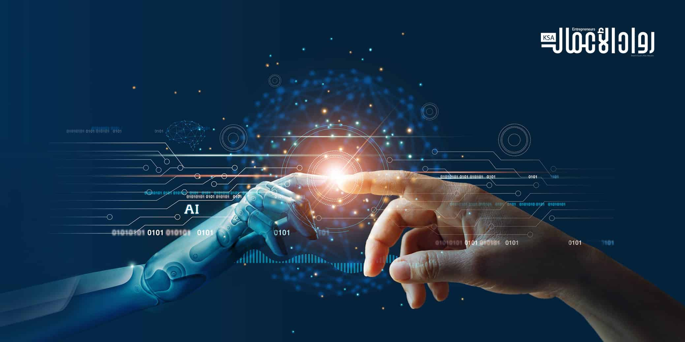
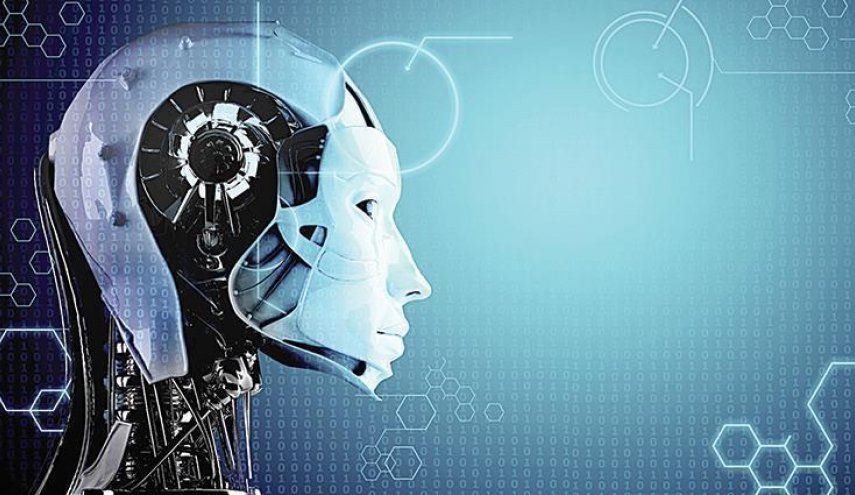
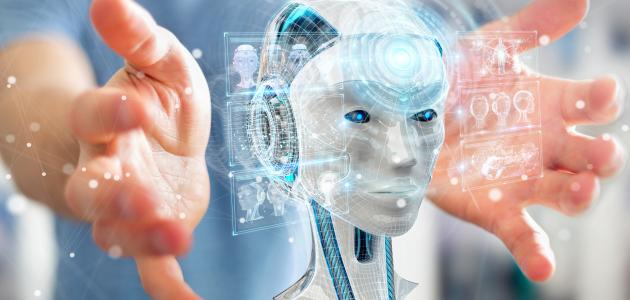
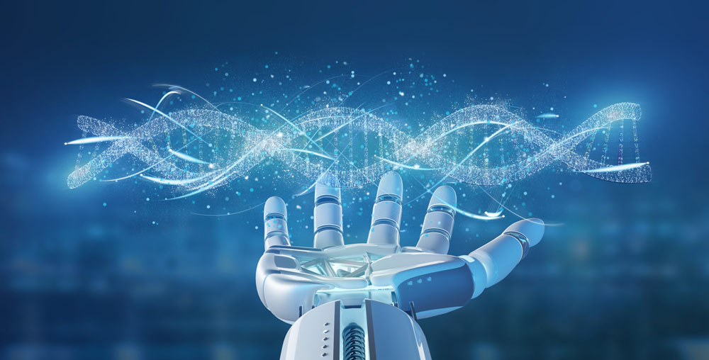

Artificial intelligence... and the future of humans
American experts put forward their predictions for the world that is
overloaded with automated systems
.jpg)
Experts consider that the rise of artificial intelligence will improve the
conditions of the majority of people in the next decade, but many, on the
other hand, express their concerns about the impact of artificial
intelligence developments on the meaning of belonging to the human race,
and the meaning of human beings being productive and enjoying free will.
Enhancing Human Capabilities
Digital life doubles human capabilities, but it also hinders activities
that they have been practicing since time immemorial. Systems controlled
by codecs have become more widespread today, as more than half of the
world's population depends on it in the world of information and
communication, benefiting from the enormous opportunities it offers them,
but they face unprecedented risks because of them. But as artificial
intelligence supported by systematic software (algorithms) continues to
expand, the question arises: “Will human conditions in the future become
better than they are today?” In the summer of 2018, a US Expert Voice
Initiative brought together 979 tech leaders, innovators, developers,
entrepreneurs, policymakers, researchers, and activists to answer this
question. They expected that the artificial intelligence network would
multiply human effectiveness, but at the same time, it would threaten
human subjectivity, strength, and capabilities. Experts talked about the
great and varied possibilities, such as the possibility of computers
equaling or even surpassing intelligence, as well as the human
capabilities to complete basic tasks such as making complex decisions,
reasoning and learning, difficult analysis and pattern recognition, visual
acumen, speech recognition and language translation. They also stressed
that "smart" systems in societies, vehicles, buildings, factories,
agricultural and commercial businesses, will save time, money and lives,
and will provide opportunities for individuals to enjoy a more
personalized future.
- optimism and pessimism
Many in their optimistic remarks focused on healthcare and the many
potential applications of artificial intelligence in diagnosing diseases,
treating patients, or helping aging citizens lead healthier, better lives.
They also expressed, according to the Pew Internet, their enthusiasm for
the role of artificial intelligence in developing comprehensive public
health programs based on the huge amounts of data that may be collected in
the coming years in all areas from the individual genome to nutrition.
Moreover, a number of these experts expected that artificial intelligence
would help bring about long-awaited changes in formal and non-formal
education systems. However, most of the participating experts, both
optimists and non-optimists, expressed their concerns about the impact of
these tools on the fundamental factors of human nature in the long run.
All participants in this initiative were asked to explain why they
believed that artificial intelligence would improve or reverse human
conditions. Many shared their concerns, while others made proposals for
pathways to some solutions.
- Strong threats
The most important threats fall into: > Artificial intelligence and the
future of humans: experts express their concerns and suggest solutions.
Individuals may experience a state of losing control of their lives when
“black box” tools based on computer programs automatically take over the
issue of making decisions on basic issues, and humans lose control over
the course of these matters. This effect will deepen as automated systems
become more and more complex. > Data misuse: The use of data and
surveillance in complex systems designed to make profits or exercise
power. Most AI tools fall or will fall into the hands of for-profit
corporations or power-hungry governments. Digital systems often lack the
values and ethics that depend on leaving the decision-making to the
people themselves. > Job Loss: AI's control of job opportunities will
increase economic divisions and lead to social revolutions. > Increasing
dependency: the decline of individuals’ cognitive, social and life skills,
as many see artificial intelligence as an opportunity to double human
potential, others see the opposite, and expect humans to increase
dependence on machine-driven networks and diminish people’s ability to
think to serve their interests. > Destruction (autonomous weapons,
cybercrime, weaponization of information): Some see in the future a
further decline in traditional socio-political structures and expect great
loss of life as a result of the rapid growth of mechanized military
applications and the transformation of information into a weapon in the
form of lies and propaganda to destabilize groups Humanity; Some even fear
that hackers and cybercriminals will gain access to economic systems. Non-

curable solutions As for the proposed solutions, they are directed
towards securing aspects of the global good in the first degree, such as:
> Enhancing human cooperation across borders and groups of stakeholders:
ie developing digital cooperation aimed at better serving human interests
and placing it at the top of priorities. There must be ways to enable
people around the world to reach common understandings and agreements. >
Adopt value-based systems: Develop policies to ensure that artificial
intelligence is directed towards “humanity” and the common good, and adopt
a “non-profit, innovative project mindset” to build comprehensive,
decentralized “compassionate” smart networks whose mission is to help
humans. > Prioritizing people: modifying political and economic systems to
better help humans “race with robots,” reorienting economic and political
systems toward expanding human capabilities and capabilities with the aim
of increasing human cooperation with AI and controlling trends that may
lead to the decline in importance of humans in the face of programmed
intelligence . Calls for organizing artificial intelligence networks

The Pew Internet group asked the participating experts the
following question: “Please, think about the coming years to 2030, as long
as analysts expect people to become more dependent on artificial
intelligence networks in complex digital systems. Some argue that we as
humans will continue to improve our lives based on positive outcomes while
making extensive use of these networked tools, while others argue that our
increasing reliance on artificial intelligence and associated systems will
often create common hardships. The essential question: Do you think that
advanced artificial intelligence and associated technical systems for
enhancing human capabilities and enabling them to do so is the greatest
possibility of what we will see by 2030? Would people be better off than
they are today? Or will artificial intelligence and related technologies
weaken the autonomy and power of human beings to the point that their
condition will be worse than it is today? Overall, despite the downsides
feared by experts, 63% of participants in this initiative said they hope
most people will be better off in 2030, compared to 37% who say they
believe the opposite. A number of thought leaders who participated in this
survey pointed out that the increasing dependence of humans on technical
systems will not go well unless the engineering, distribution and
modernization of these tools, platforms and networks are closely
monitored. As for the most important, strongest and most comprehensive
answers that we got, they came from: Sonia Katial, associate director at
the Berkeley Center for Law and Technology and a member of the US
Department of Commerce’s Council of Digital Economy Advisers, predicted
that “in 2030, the biggest set of questions will be how understanding AI
and its applications will affect the course of civil rights in the future.
We will also be on a date with many questions about privacy, discourse,
the right of assembly, and the technical construction of personalization,
which will be raised again in the context of artificial intelligence and
in turn prompt us to ask additional questions in the depth of our beliefs
about equality and opportunities for all. As for identifying the
beneficiaries and the affected in this new world, it depends on the extent
to which we analyze these questions today for the future.” Important: We
have to work hard to make sure this technology does not conflict with our
values. >Eric Brynjolfsen, director of the Digital Economy Initiative at
the Massachusetts Institute of Technology, said: "Artificial intelligence
techniques are now performing the work of (Superman), that is, superhuman
in a number of areas, and I expect them to improve by 2030." > As for
Brian Johnson, founder of the "Kernel" company that develops interfaces
for neural networks, he said he strongly believes that success will depend
on the extent to which smart systems are able to change economic systems
in a way that improves human life. > Finally, Marina Gorbis, director of
the Institute for the Future, warned that “without tangible changes in our
political economy and data control frameworks, the development of
artificial intelligence will create a gap of inequality, an increase in
people’s monitoring processes, and in the interaction of systems among
them, bypassing The human".
